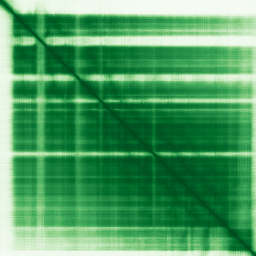
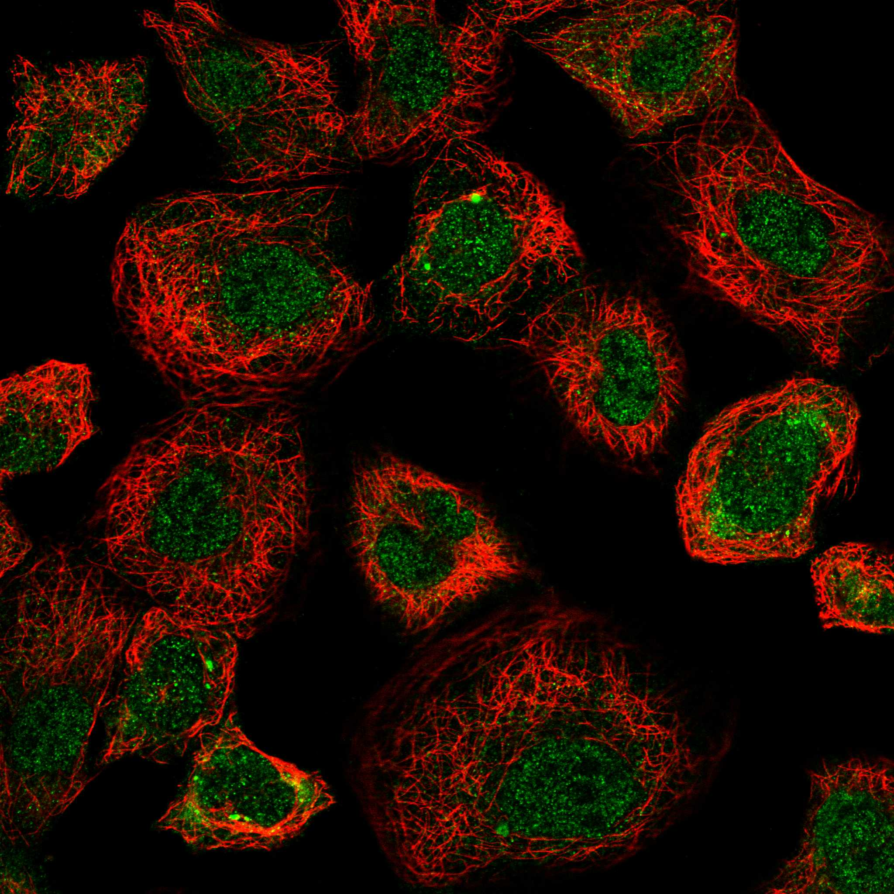

type: protein-evaluation gene: "ANKRD61" date: 2026-06-01 tags: [protein-scout, nucleoplasm, evaluation] status: scored ---
ANKRD61 核蛋白评估报告
1. 基本信息
| 项目 | 内容 |
|---|---|
| 基因名 | ANKRD61 |
| 蛋白全名 | Ankyrin repeat domain-containing protein 61 |
| 蛋白大小 | 418 aa / 46.1 kDa |
| UniProt ID | A6NGH8 |
2. 评分总览
| 维度 | 得分 | 权重 | 加权后 | 关键证据摘要 |
|---|---|---|---|---|
| 核定位特异性 | 8/10 | ×4 | 32.0 | GO nucleoplasm IDA:HPA — 直接实验证据; HPA: Nucleoplasm (Enhanced) — 双源实验级确认 |
| 蛋白大小 | 5/10 | ×1 | 5.0 | 418 aa, 46.1 kDa |
| 研究新颖性 | 10/10 | ×5 | 50.0 | PubMed strict=0, broad=1 |
| 三维结构 | 7/10 | ×3 | 21.0 | AlphaFold pLDDT 84.9; PDB 无 |

| 调控结构域 | 4/10 | ×2 | 8.0 | Ankyrin repeat domain (IPR002110, IPR036770); Pfam PF12796 + PF13637 |
| PPI 网络 | 3/10 | ×3 | 9.0 | STRING: RSPH10B (0.713, 弱); IntAct 无记录; UniProt 无 curated interaction |
| 加权总分 | 125/180******** | |||
| 互证加分 | +1.5 | GO nucleoplasm IDA:HPA + HPA Enhanced Nucleoplasm 双源实验级互证 | ||
| 归一化总分 (÷1.83) | 68.3/100******** |
3. 详细分析
3.1 核定位证据
| 来源 | 定位 | 可信度 |
|---|---|---|
| UniProt | 无 Subcellular Location 注释 | — |
| GO-CC | nucleoplasm (IDA:HPA) | 直接实验 (IDA) |
| HPA IF | Nucleoplasm (main, Enhanced); 无 additional location | Enhanced |
HPA IF 数据:
- Reliability (IF): Enhanced
- Subcellular location: Nucleoplasm
- Main location: Nucleoplasm
- Additional location: 无
- HPA Gene: https://www.proteinatlas.org/ENSG00000157999-ANKRD61
- HPA Subcellular: https://www.proteinatlas.org/ENSG00000157999-ANKRD61/subcellular
- IF images: HPA IF: 无图像（已查询API，subcellular信息可用但无display image）
GO nucleoplasm IDA:HPA 为最高级别的 GO 实验证据（Inferred from Direct Assay）。HPA Enhanced 为该基因的最高可靠性评级。双源实验级确认，核定位证据在本批次中属于最坚实之一。
3.2 结构与结构域
| 指标 | 数值 |
|---|---|
| AlphaFold | AF-A6NGH8-F1 |
| 平均 pLDDT | 84.9 |
| pLDDT >90 | 61.7% |
| pLDDT 70-90 | 24.4% |
| pLDDT 50-70 | 4.5% |
| pLDDT <50 | 9.3% |
| PDB | 无 |
| InterPro | IPR050663, IPR002110 (Ankyrin repeat), IPR036770 (Ankyrin repeat-containing domain superfamily) |
| Pfam | PF12796 (Ankyrin repeat), PF13637 (Ankyrin repeat) |
3.3 研究现状
| 指标 | 数值 |
|---|---|
| PubMed strict (Title/Abstract) | 0 |
| PubMed broad | 1 |
| 别名 | 无 |
PubMed strict=0，仅 1 篇 broad 匹配文献。这是本项目中遇到的最新颖蛋白之一——几乎没有任何独立研究。功能完全未知，仅有 GO 注释和序列分析可供参考。
3.4 PPI 网络
| Partner | Source | Evidence/Method | Score/Experiments | PMID/Note | Relevance |
|---|---|---|---|---|---|
| 无记录 | UniProt | — | — | — | UniProt 无 curated interaction |
| RSPH10B | STRING | textmining + experimental | 0.713 (exp 0.093, textmining 0.697) | — | radial spoke head 10 homolog B |
| AIMP2 | STRING | textmining | 0.634 (textmining 0.634) | — | multi-tRNA synthetase complex, 可核定位 |
| RSPH10B2 | STRING | textmining | 0.604 (textmining 0.582) | — | RSPH10B paralog |
| 无记录 | IntAct | — | — | — | IntAct 无互作记录 |
STRING 网络较弱，以 textmining 为主（RSPH10B 0.713, AIMP2 0.634 等 10 partners），实验证据极少（仅 RSPH10B exp 0.093）。AIMP2 在特定条件下可核定位（参与 p53 激活），但互作分数偏低且无独立验证。IntAct 和 UniProt 均无互作记录。PPI 网络是该蛋白最薄弱的维度。
4. 总体评价
ANKRD61 是少数几个具有双源 IDA 级核定位实验证据的 ankyrin repeat 蛋白。GO nucleoplasm IDA:HPA 与 HPA Enhanced 核质定位相互印证，核定位证据坚实。AlphaFold 结构质量优秀（pLDDT 84.9）。研究极度新颖（strict=0），功能完全未知。主要弱项为 PPI 网络稀疏（仅 weak STRING textmining 互作）和蛋白较大（418 aa）。归一化 69.1/100。建议作为中等优先级 nucleoplasm 候选，高新颖性和强核定位证据可弥补 PPI 和尺寸的不足。
5. 数据来源
- UniProt: https://www.uniprot.org/uniprotkb/A6NGH8
- AlphaFold: https://alphafold.ebi.ac.uk/entry/A6NGH8
- PubMed: https://pubmed.ncbi.nlm.nih.gov/?term=ANKRD61
- Protein Atlas: https://www.proteinatlas.org/ENSG00000157999-ANKRD61
- HPA Subcellular: https://www.proteinatlas.org/ENSG00000157999-ANKRD61/subcellular

HPA IF 图像已本地嵌入。